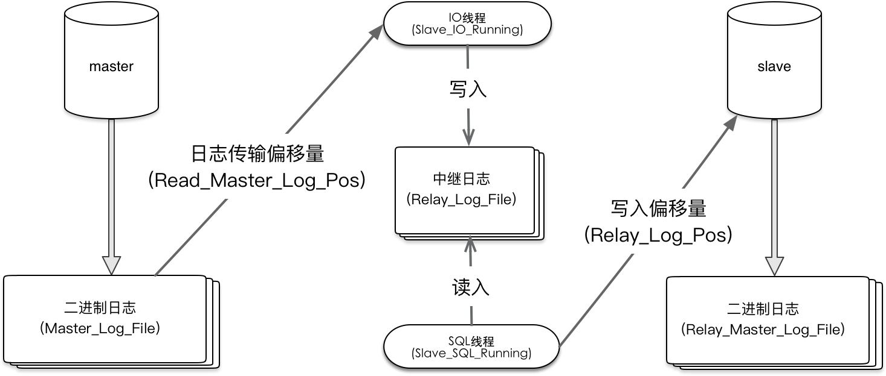

#配置my.cnf文件
server-id = 2
log_bin = /var/log/mysql/mysql-bin.log
expire_logs_days = 10
max_binlog_size = 100M
#指定复制的数据库
replicate-do-db=nextcloud
#---------------------------------------------
#偏移量 指定字节数。0表示：从 二进制日志 0位置开始，（master 上的Position 值是纪录写到多了日志）
change master to master_host='192.168.1.8',
master_port=3306,
master_user='root',
master_password='root',
master_log_file='mysql-bin.000001',
master_log_pos=0;
#启动/复制
start/stop slave;
#运行状态
show slave status;
- salve首次同步是否需要建立表结构或者数据库？ 取决于master上的二进制是否删除或者在master_log_file中指定的二进制文件是否包含创建表以及数据库的记录,
指定或者忽略复制的二进制数据日志在slave下面六项需要上设置
- replicate_do_dB:设定需要复制的数据库,多个DB用逗号分隔
- replicate_Ignore_DB:设定可以忽略的数据库.—中继站忽略
- replicate_Do_Table:设定需要复制的Table
- replicate_Ignore_Table:设定可以忽略的Table
- replicate_Wild_Do_Table:功能同Replicate_Do_Table,但可以带通配符来进行设置。
- replicate_Wild_Ignore_Table:功能同Replicate_Do_Table,功能同replicate_Ignore_Table,可以带通配符。
在slave和master设置忽略数据库优缺点
- 优点是在slave端设置复制过滤机制,可以保证不会出现因为默认的数据库问题而造成Slave和Master数据不一致或复制出错的问题.
- 缺点是性能方面比在Master端差一些.原因在于:不管是否须要复制,事件都会被IO线程读取到Slave端,这样不仅增加了网络IO量,也给Slave端的IO线程增加了Relay Log的写入量。
主从复制几个重要的启动选项
log-slave-updates 用来配置从服务器的更新是否写入二进制日志，这个选项默认是不打开的，但是，如果这个从服务器B是服务器A的从服务器，同时还作为服务器C的主服务器，那么就需要开发这个选项，这样它的从服务器C才能获得它的二进制日志进行同步操作
master-connect-retry 是用来设置在和主服务器连接丢失的时候，重试的时间间隔，默认是60秒
read-only 是用来限制普通用户对从数据库的更新操作，以确保从数据库的安全性，不过如果是超级用户依然可以对从数据库进行更新操作
slave-skip-errors 在复制过程中，由于各种的原因，从服务器可能会遇到执行BINLOG中的SQL出错的情况，在默认情况下，服务器会停止复制进程，不再进行同步，等到用户自行来处理。slave-skip-errors的作用就是用来定义复制过程中从服务器可以自动跳过的错误号，当复制过程中遇到定义的错误号，就可以自动跳过，直接执行后面的SQL语句。
--slave-skip-errors=[err1,err2,…….|ALL] 但必须注意的是，启动这个参数，如果处理不当，很可能造成主从数据库的数据不同步，在应用中需要根据实际情况，如果对数据完整性要求不是很严格，那么这个选项确实可以减轻维护的成本
工作原理分为三步
- 主服务(master)把数据更改且已经提交事务的数据记录到二进制日志（binlog）中
- 主服务(master)发送二进制内容根据当前position 偏移量， slave通过IO线程将二进制日志 写入到 relay_log_file 中并且记录 read_master_log_pos 偏移量
- slave存服务器 sql 线程读 relay_log_file 文件 并且记录偏移量relay_log_pos sql线程会重新写入到中继日志文件relay_master_log_file中
- 最后执行 relay_master_log_file 文件中的内容 执行SQL 记录偏移量 exe_master_log_pos
- 在设置主服务器时master_log_pos = xx 和master_log_file = xx
- master_log_file = XX 表示当前从服务器需要复制的主服务器的二进制文件名称（如果当前二进制文件未删除）会根据实际情况来选择复制那个二进制文件(slave 服务器文件 relay_log_file 中未记录xx的文件记录)
- stop slave ;
- change master to master_log_file='mysql-bin.000009' ,master_log_pos=0 ;
- 当前master 二进制已经发送到mysql-bin.000013 了但是可以要求master 对这台slave 从 mysql-bin.000009文件开始 （即使当前slave服务器直接设置mysql-bin.000013 master会根据当前slave relay日志来确定是否发送最早的二进制文件）
- master_log_file = xx 二进制日子文件的发生的偏移量地址
/var/lib/mysql/master.info 可以看到配置好的信息
change master to master_host=' ‘; 即可成功删除同步用户信息
set global sql_slave_skip_counter=N
中的N是指跳过N个event最好记的是N被设置为1时，效果跳过下一个事务。跳过第N个event后，位置若刚好落在一个事务内部，则会跳过这整个事务 一个insert/update/delete不一定只对应一个event，由引擎和日志格式决定。
SQL 线程错误一般是因为修改表结果或者主键冲突 约束 数据的一致性问题，对数据本身的修改，不涉及到一致性完整性 都是可以的
stop slave ;
set global sql_slave_skip_counter=1;
start slave ;
show slave status;